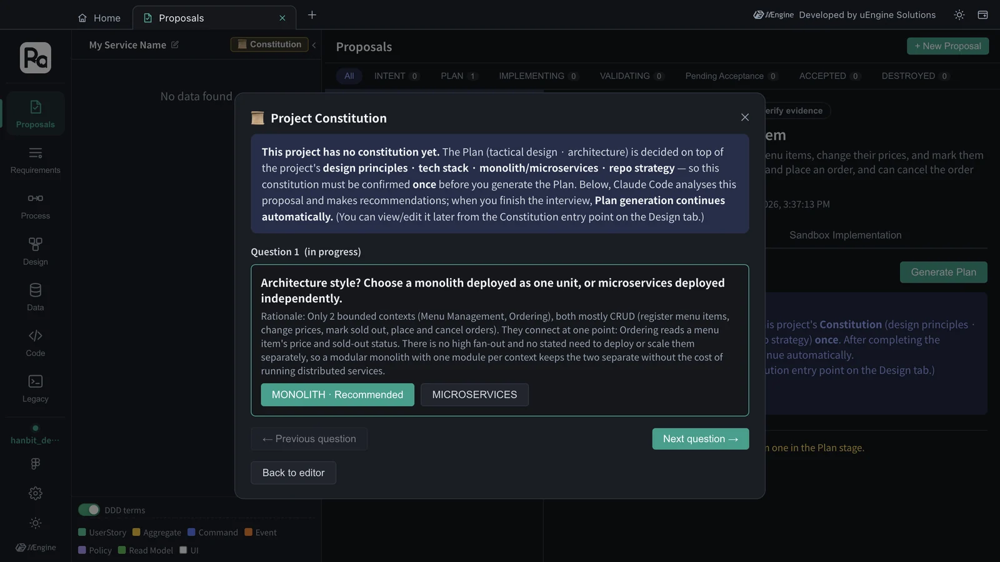
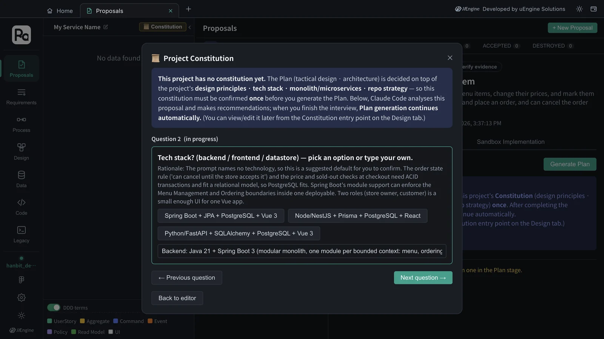
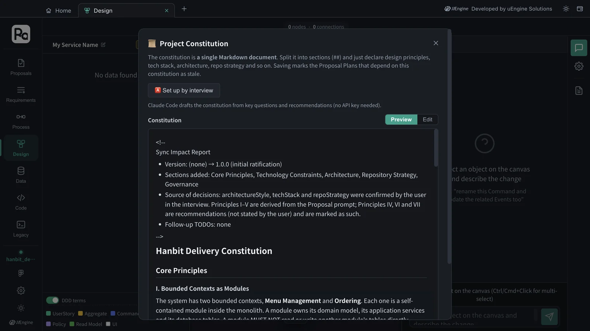

Before planning, decide this project's design principles · tech stack · architecture style · repository strategy once. Claude Code reads the proposal and offers questions and recommendations, you just pick the answers, and those answers become the constitution document.
Why a constitution#
The same “Order” aggregate leads to completely different plans depending on whether you build it with Spring Boot or Node.js, and whether you split it into services or keep one. If you make those decisions again for every proposal, proposals end up building different structures. The constitution is the document where you write such decisions down once for the project. From then on, every proposal's plan (Chapter 5) and implementation (Chapter 6) follow the constitution, and each plan decision shows which passage of the constitution it came from.
The constitution is a single Markdown document. Each section (##) holds declarations only.
| Section | What it holds |
|---|---|
| Core Principles | Design principles, with a strength such as must (MUST) or cannot be changed (NON-NEGOTIABLE), and a rationale |
| Technology Constraints | Languages, frameworks, datastores |
| Architecture | Monolith/microservices, modules and dependency direction, layers |
| Repository Strategy | Monorepo/multi-repo, folder layout |
| Governance | Amendment procedure and versioning policy |
Hands-on 1 — Create the constitution by interview#
If you try to make a proposal's plan in a project without a constitution, “Constitution Required” appears and an interview opens.
- In the Proposals tab, open
PRO-001, click Proceed to Plan → at the bottom, then Generate Plan in the Plan section. - The Project Constitution dialog opens, and Claude Code first analyzes this proposal (“[analysis] proposal PRO-001 — 2 BoundedContexts: Menu Management, Ordering”).
- Questions appear one at a time. The Rationale under a question is Claude Code's reason for its recommendation. Pick an option or type your own, then click Next question →.
- On the last question, click ✓ Create constitution. The constitution is saved, and plan generation continues automatically (Chapter 5).

In this tutorial there were two questions.
| Question | Rationale (reason for the recommendation) | Answer chosen |
|---|---|---|
| Architecture style | Only 2 bounded contexts, both mostly CRUD, joined at one point (Ordering reads a menu item's price and sold-out status) — a modular monolith keeps them separate without the cost of distributed services | MONOLITH (recommended) |
| Tech stack (backend / frontend / datastore) | The requirement names no technology, so this is a suggested default: the order-state rule and the checkout checks need ACID transactions (PostgreSQL), and Spring Boot's module support can keep the two contexts apart in one deployable | Typed in: Backend TypeScript (Node.js, Express) / Frontend React / Datastore SQLite |

You don't have to follow the recommendation
The recommended tech stack was Spring Boot (Java 21 + Spring Boot 3, typed into the field for you), but this tutorial replaced it with Node.js and SQLite to get the implementation running quickly. The constitution records your answers as “confirmed by the user in the interview”. The number of questions and their options depend on the proposal.
Hands-on 2 — Read the constitution#
You can open the constitution at any time from the Project Constitution card on Home (or the Constitution button in the Design tab's navigator).

You answered only two questions, but Claude Code read the proposal's strategic design and set out seven principles. The ones it added on its own, beyond your requirement and answers, are marked (recommended).
| Principle | Gist |
|---|---|
| I. Bounded Contexts as Modules | Two modules, Menu Management and Ordering. A module owns its domain model and tables, MUST NOT touch another module's tables, and talks to it only through its published interface or in-process domain events |
| II. Invariants Live in the Aggregate | Rules are enforced in the aggregates: a menu item has a non-negative price and only its store owner may change it; sold-out items MUST be rejected from an order; a customer may cancel only before the store accepts |
| III. Explicit Order Lifecycle | Placed → Accepted and Placed → Cancelled, only through named commands (PlaceOrder · AcceptOrder · CancelOrder); an illegal transition fails with a domain error; every change emits an event |
| IV. Price Snapshot at Order Time (recommended) | Each order line copies the item ID, name and unit price at order time; later price changes or sold-out marks MUST NOT change existing orders |
| V. Role-Scoped Actions | Two roles, Store Owner and Customer; every command is checked against role and ownership in the application layer |
| VI. Test-First on Domain Rules (recommended) | Every rule and transition in II–IV has automated tests; API tests cover the success and rejection paths of each command |
| VII. Simplicity (recommended) | One deployable, one database, synchronous in-process calls; no message brokers, API gateways or service mesh unless the constitution is amended |
It also wrote Technology Constraints (TypeScript strict on Node.js with Express · React · one SQLite file with versioned migrations · REST with explicit 4xx domain errors · state-changing commands in a transaction that re-checks the current state), Architecture (modular monolith, layers domain → application → infrastructure → interface, Ordering → Menu Management through its read interface), Repository Strategy (monorepo backend/ · frontend/) and Governance (MAJOR · MINOR · PATCH amendments; an amendment makes earlier plans stale).
When you change the constitution
Switch to Edit and change it directly, or interview again with Set up by interview. When you save the constitution, plans made with it are marked “stale”, and you are told to plan again.
What to check#
- The editor opened from the Project Constitution card on Home shows
Hanbit Delivery Constitution. - Technology Constraints lists the stack you chose in the interview (TypeScript on Node.js with Express · React · SQLite), and the Sync Impact Report at the top says the tech stack was confirmed by the user in the interview.
Quiz#
- Do you make a constitution for each proposal, or is there one per project?
- Principles IV, VI and VII are marked “(recommended)”. What does that mean?
- What do you have to do after changing the constitution?
Answers
- One per project (you can add per-bounded-context additions). Every proposal's plan follows this constitution.
- Claude Code added them on its own — they don't come from your requirement or your interview answers. They still bind every plan like the other principles; if you disagree, change them with Edit or interview again.
- Plans that relied on that constitution are marked “stale”, so regenerate the plan of each affected proposal and confirm it.